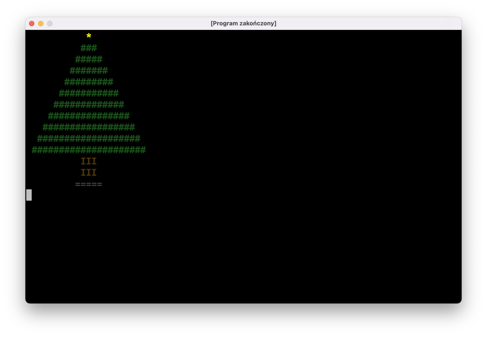

Omówienie zadania: Trójkąt
Zacznijmy od “nudnych” części programu: wczytania wysokości trójkąta, sprawdzeniu, czy użytkownik nie wpisał głupot, itp.:
fun main() = terminal {
do {
print("Podaj wysokość trójkąta: ")
val wysokość = readln().toIntOrNull()
if (wysokość != null && wysokość > 0) {
// tu będziemy rysować coś w ten deseń:
//
// *******
// *****
// ***
// *
}
println()
} while (true)
}
Zauważcie następującą rzecz: każda linijka składa się z nieparzystej liczby gwiazdek poprzedzonych spacjami. W każdej linii jest o jedną spację więcej i o dwie gwiazdki mniej niż w poprzedniej. Zaczynamy od zera spacji i… no właśnie, ilu gwiazdek?
Popatrzmy na dwa mniejsze trójkąty:
strona lewa strona prawa
**** ****
*** ***
** **
* *
Każda strona ma w pierwszej linijce tyle samo gwiazdek, ile wynosi wysokość trójkąta, przy czym jedna gwiazdka jest wspólna dla obu stron. Tak więc w pierwszej linijce dużego trójkąta, który chcemy narysować będzie (wysokość * 2) - 1 gwiazdek.
fun main() = terminal {
do {
print("Podaj wysokość trójkąta: ")
val wysokość = readln().toIntOrNull()
if (wysokość != null && wysokość > 0) {
var liczbaSpacji = 0
var liczbaGwiazdek = (wysokość * 2) - 1
for (i in 1..wysokość) {
// wypisz spacje
// wypisz gwiazdki
// przejdź do następnej linijki
liczbaSpacji += 1
liczbaGwiazdek -= 2
}
}
println()
} while (true)
}
Do utworzenia tekstu składającego się z powtórzeń tego samego znaku możemy użyć funkcji String.repeat(n: Int): String:
fun main() = terminal {
do {
print("Podaj wysokość trójkąta: ")
val wysokość = readln().toIntOrNull()
if (wysokość != null && wysokość > 0) {
var liczbaSpacji = 0
var liczbaGwiazdek = (wysokość * 2) - 1
for (i in 1..wysokość) {
print(" ".repeat(liczbaSpacji))
print("*".repeat(liczbaGwiazdek))
println()
liczbaSpacji += 1
liczbaGwiazdek -= 2
}
}
println()
} while (true)
}
Nowy materiał
Rysowanie w kolorze
Programy, które pisaliśmy do tej pory, zawsze wypisywały tekst z góry na dół, korzystając tylko z jednego koloru czcionki, co bardzo ograniczało ich szatę graficzną. Dobra wiadomość jest taka, że nasze narzędzie terminal obsługuje drobną część tzw. ANSI escape codes, które umożliwią nam robienie nieco ciekawszych rzeczy. Zła wiadomość jest taka, że korzystanie z nich jest dość kłopotliwe.
Popatrzcie na następujący program:
fun main() = terminal {
println("Ten tekst zaraz zniknie! Naciśnij tylko enter...")
readln()
print("\u001b[2J")
println("Ha! A nie mówiłem!")
}
Tekst \u001b[2J to “magiczna” komenda, której wypisanie czyści ekran i przesuwa kursor do lewego górnego rogu.
Jej pierwsza część, \u001b to pojedynczy znak, tylko zapisany w specjalny sposób. Każdy znak, który wypisujemy na ekran, ma przypisaną do siebie liczbę. Na przykład literka A ma przypisany numer 65. Zamiast print('A') możemy też napisać print('\u0041'). \u oznacza “następne cztery znaki potraktuj jako liczbę w systemie szesnastkowym”. 0041 w systemie szesnastkowym to właśnie 65 w systemie dziesiętnym, więc print('\u0041') wypisze na ekran literkę A.
Oczywiście nikt o zdrowych zmysłach nie będzie używał tego sposobu do zapisu zwykłego tekstu, ale może być on przydatny, jeśli będziemy chcieli zmusić komputer do wypisania na ekran jakiegoś znaku, którego nie da się wpisać z klawiatury. \u001b z naszej “magicznej” komendy to właśnie tego rodzaju znak: 1b to kod znaku “Escape”, od którego zaczynają się wszystkie ANSI escape codes, czyli nasze “magiczne” terminalowe komendy:
- wspomniane wcześniej czyszczenie obrazu:
\u001b[2J - zmiana koloru czcionki:
\u001b[38;2;r;g;bm(gdzier,gibto liczby od 0 do 255, będące składowymi tego koloru) - zmiana koloru tła:
\u001b[48;2;r;g;bm - przywrócenie domyślnego koloru czcionki:
\u001b[39m - przywrócenie domyślnego koloru tła:
\u001b[49m - przywrócenie domyślnych kolorów:
\u001b[0m - przesunięcie kursora:
\u001b[y;xH(gdzie y i x to współrzędne kursora; lewy-górny róg to punkt[1, 1]) - ukrycie kursora:
\u001b[?25l - pokazanie kursora:
\u001b[?25h
Żeby nie musieć pamiętać tych cudacznych sekwencji, napiszemy nasze pierwsze narzędzie, a przy okazji nauczymy się kilku nowych rzeczy.
Narzędzie Ansi
Na dobry początek stwórzmy osobny plik z funkcją, która zwróci komendę ANSI do czyszczenia ekranu:
package jerz.codes.narzedzia
fun wyczyśćEkran(): String {
return "\u001b[2J"
}
Jest to bardzo prosta funkcja składająca się tylko z jednego wyrażenia return. Kotlin oferuje specjalną składnię dla takich przypadków. Możemy zmienić naszą funkcję w następujący sposób:
fun wyczyśćEkran(): String = "\u001b[2J"
A ponieważ na pierwszy rzut oka widać, że ta funkcja zwraca tekst, możemy pominąć : String i skrócić to jeszcze bardziej do fun wyczyśćEkran() = "\u001b[2J".
Dzięki temu nasz program stanie się nieco czytelniejszy:
fun main() = terminal {
println("Ten tekst zaraz zniknie! Naciśnij tylko enter...")
readln()
print(wyczyśćEkran())
println("Ha! A nie mówiłem!")
}
Będziemy mieli więcej takich funkcji i dobrze byłoby je jakoś pogrupować, żeby łatwo było je znaleźć. Zacznijmy od czegoś takiego:
package jerz.codes.narzedzia
class Ansi {
fun wyczyśćEkran(): String = "\u001b[2J"
}
Stworzyliśmy właśnie nowy typ Ansi, dzięki czemu wszystkie powiązane metody będą w jednym miejscu i IntelliJ po napisaniu Ansi(). będzie wyświetlał wszystkie dostępne w naszym narzędziu funkcje. Sposób użycia nie jest jednak idealny:
println("To zaraz zniknie! Naciśnij enter...")
readln()
print(Ansi().wyczyśćEkran())
println("Ha! A nie mówiłem!")
Ansi to typ danych, i za każdym razem, kiedy chcemy użyć jakiejś funkcji zdefiniowanej w tym typie, musimy stworzyć obiekt tego typu przy użyciu konstruktora Ansi(). Wprowadźmy drobną zmianę:
package jerz.codes.narzedzia
object Ansi {
fun wyczyśćEkran(): String = "\u001b[2J"
}
Słówko object działa podobnie jak class pod tym względem, że też służy ono do zdefiniowania nowego typu danych. Różnica jest taka, że jednocześnie tworzymy obiekt tego typu o nazwie takiej samej jak nazwa typu. Ponadto nie da się utworzyć innych obiektów tego typu: object Ansi oznacza, że jest tylko jeden obiekt typu Ansi, i nazywa się on Ansi. Upraszcza to nieco jego użycie:
println("To zaraz zniknie! Naciśnij enter...")
readln()
print(Ansi.wyczyśćEkran()) // nie ma nawiasów `()` po `Ansi`
println("Ha! A nie mówiłem!")
object vs. class
W zrozumieniu różnicy pomiędzy object i class może pomóc wam następujący przykład:
class KrzesłoZIkei to takie krzesło, które jest masowo produkowane w fabryce. Dowolny egzemplarz krzesła nie różni się szczególnie od innych.
object UnikatoweKrzesłoMisternieWystruganePrzezWujkaWładkaWJegoWarsztaciku to jedyne w swoim rodzaju krzesło. Nie ma drugiego takiego krzesła, nawet gdyby wujaszek bardzo się postarał, co najwyżej wyjdzie mu object ZupełnieInneUnikatoweKrzesłoWładkowejProdukcji.
Dygresja: dlaczego return zamiast print?
Możecie się zastanawiać, dlaczego nasza funkcja wyczyśćEkran zwraca komendę do czyszczenia obrazu, zamiast od razu wypisać ją na ekran przy użyciu print‘a. Będzie nam to potrzebne na późniejszych zajęciach, gdy będziemy zajmować się animacjami.
Pozostałe funkcje w narzędziu Ansi
Dodajmy metodę do zmiany koloru tekstu:
package jerz.codes.narzedzia
object Ansi {
fun wyczyśćEkran(): String = "\u001b[2J"
fun kolorTekstu(kolor: Color?) = …
}
Użyłem tutaj typu Color, który musimy zaimportować (będzie się on “świecić” na czerwono; po najechaniu na ten tekst kursorem możemy nacisnąć Alt + Enter, a IntelliJ doda na górze pliku linijkę import java.awt.Color). Jest to typ dostępny w standardowych bibliotekach (tak jak List, IntRange, itp.) i prościej skorzystać z niego niż pisać od zera własny.
Żeby utworzyć obiekt typu Color, możemy użyć konstruktora Color(r: Int, g: Int, b: Int), który
przyjmuje trzy składowe koloru w postaci liczb z przedziału od 0 do 255. Jeśli podany kolor będzie nullem, przywrócimy domyślny kolor tekstu sekwencją \u001b[39m. W przeciwnym razie
użyjemy sekwencji \u001b[38;2;r;g;bm, zastępując r, g i b wartościami wyciągniętymi z obiektu kolor przy użyciu kolor.red, kolor.blue itd.:
package jerz.codes.narzedzia
object Ansi {
fun wyczyśćEkran() = "\u001b[2J"
fun kolorTekstu(kolor: Color?) = when (kolor) {
null -> "\u001b[39m"
else -> "\u001b[38;2;${kolor.red};${kolor.green};${kolor.blue}m"
}
}
Pozostałe funkcje dopiszcie sami!
Choinka
Możemy troszkę pozmieniać program “Trójkąt”, aby wypisać na ekran kolorową choinkę:
fun main() = terminal {
val wysokośćChoinki = 10
// narysuj gwiazdkę
print(Ansi.kolorTekstu(Color.YELLOW))
print(" ".repeat(wysokośćChoinki) + " * ")
println()
// narysuj gałązki
var liczbaSpacji = wysokośćChoinki
var liczbaGałązek = 3
print(Ansi.kolorTekstu(Color(26, 80, 26)))
for (i in 1..wysokośćChoinki) {
print(" ".repeat(liczbaSpacji))
print("#".repeat(liczbaGałązek))
println()
// ponieważ rysujemy "trójkąt" w drugą stronę,
// zmniejszamy liczbę spacji
// i zwiększamu liczbę gałązek
liczbaSpacji -= 1
liczbaGałązek += 2
}
// narysuj pień i podstawkę
print(Ansi.kolorTekstu(Color(0x4F, 0x39, 0x08)))
println(" ".repeat(wysokośćChoinki - 1) + " III ")
println(" ".repeat(wysokośćChoinki - 1) + " III ")
print(Ansi.kolorTekstu(Color.DARK_GRAY))
println(" ".repeat(wysokośćChoinki - 1) + "=====")
}

Zwróćcie uwagę na kilka różnych sposobów tworzenia obiektu typu Color:
- Do gwiazdki użyliśmy stałej bibliotecznej
Color.YELLOW - Dla igliwia podaliśmy składowe RGB jako liczby dziesiętne
Color(26, 80, 26) - Dla pnia podaliśmy składowe jako liczby szesnastkowe
Color(0x4F, 0x39, 0x08)